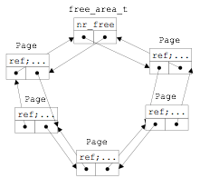

双向循环链表#
在“数据结构”课程中，如果创建某种数据结构的双循环链表，通常采用的办法是在这个数据结构的类型定义中有专门的成员变量 data, 并且加入两个指向该类型的指针next和prev。例如：
typedef struct foo {
ElemType data;
struct foo *prev;
struct foo *next;
} foo_t;
双向循环链表的特点是尾节点的后继指向首节点，且从任意一个节点出发，沿两个方向的任何一个，都能找到链表中的任意一个节点的data数据。由双向循环列表形成的数据链如下所示：
双向循环链表#
这种双向循环链表数据结构的一个潜在问题是，虽然链表的基本操作是一致的，但由于每种特定数据结构的类型不一致，需要为每种特定数据结构类型定义针对这个数据结构的特定链表插入、删除等各种操作，会导致代码冗余。
在uCore内核（从lab2开始）中使用了大量的双向循环链表结构来组织数据，包括空闲内存块列表、内存页链表、进程列表、设备链表、文件系统列表等的数据组织（在[labX/libs/list.h]实现），但其具体实现借鉴了Linux内核的双向循环链表实现，与“数据结构”课中的链表数据结构不太一样。下面将介绍这一数据结构的设计与操作函数。 uCore的双向链表结构定义为：
struct list_entry {
struct list_entry *prev, *next;
};
需要注意uCore内核的链表节点list_entry没有包含传统的data数据域，，而是在具体的数据结构中包含链表节点。以lab2中的空闲内存块列表为例，空闲块链表的头指针定义（位于lab2/kern/mm/memlayout.h中）为：
/* free_area_t - maintains a doubly linked list to record free (unused) pages */
typedef struct {
list_entry_t free_list; // the list header
unsigned int nr_free; // # of free pages in this free list
} free_area_t;
而每一个空闲块链表节点定义（位于lab2/kern/mm/memlayout）为：
/* *
* struct Page - Page descriptor structures. Each Page describes one
* physical page. In kern/mm/pmm.h, you can find lots of useful functions
* that convert Page to other data types, such as phyical address.
* */
struct Page {
atomic_t ref; // page frame's reference counter
……
list_entry_t page_link; // free list link
};
这样以free_area_t结构的数据为双向循环链表的链表头指针，以Page结构的数据为双向循环链表的链表节点，就可以形成一个完整的双向循环链表，如下图所示：
 图 空闲块双向循环链表
从上图中我们可以看到，这种通用的双向循环链表结构避免了为每个特定数据结构类型定义针对这个数据结构的特定链表的麻烦，而可以让所有的特定数据结构共享通用的链表操作函数。在实现对空闲块链表的管理过程（参见lab2/kern/mm/default_pmm.c）中，就大量使用了通用的链表插入，链表删除等操作函数。有关这些链表操作函数的定义如下。
初始化
uCore只定义了链表节点，并没有专门定义链表头，那么一个双向循环链表是如何建立起来的呢？让我们来看看list_init这个内联函数（inline funciton）：
static inline void
list_init(list_entry_t *elm) {
elm->prev = elm->next = elm;
}
参看文件default_pmm.c的函数default_init，当我们调用list_init(&(free_area.free_list))时，就声明一个名为free_area.free_list的链表头时，它的next、prev指针都初始化为指向自己，这样，我们就有了一个表示空闲内存块链的空链表。而且我们可以用头指针的next是否指向自己来判断此链表是否为空，而这就是内联函数list_empty的实现。
插入
对链表的插入有两种操作，即在表头插入（list_add_after）或在表尾插入（list_add_before）。因为双向循环链表的链表头的next、prev分别指向链表中的第一个和最后一个节点，所以，list_add_after和list_add_before的实现区别并不大，实际上uCore分别用__list_add(elm, listelm, listelm->next)和__list_add(elm, listelm->prev, listelm)来实现在表头插入和在表尾插入。而__list_add的实现如下：
static inline void
__list_add(list_entry_t *elm, list_entry_t *prev, list_entry_t *next) {
prev->next = next->prev = elm;
elm->next = next;
elm->prev = prev;
}
从上述实现可以看出在表头插入是插入在listelm之后，即插在链表的最前位置。而在表尾插入是插入在listelm->prev之后，即插在链表的最后位置。注：list_add等于list_add_after。
删除
当需要删除空闲块链表中的Page结构的链表节点时，可调用内联函数list_del，而list_del进一步调用了__list_del来完成具体的删除操作。其实现为：
static inline void
list_del(list_entry_t *listelm) {
__list_del(listelm->prev, listelm->next);
}
static inline void
__list_del(list_entry_t *prev, list_entry_t *next) {
prev->next = next;
next->prev = prev;
}
如果要确保被删除的节点listelm不再指向链表中的其他节点，这可以通过调用list_init函数来把listelm的prev、next指针分别自身，即将节点置为空链状态。这可以通过list_del_init函数来完成。
访问链表节点所在的宿主数据结构
通过上面的描述可知，list_entry_t通用双向循环链表中仅保存了某特定数据结构中链表节点成员变量的地址，那么如何通过这个链表节点成员变量访问到它的所有者（即某特定数据结构的变量）呢？Linux为此提供了针对数据结构XXX的le2XXX(le, member)的宏，其中le，即list entry的简称，是指向数据结构XXX中list_entry_t成员变量的指针，也就是存储在双向循环链表中的节点地址值， member则是XXX数据类型中包含的链表节点的成员变量。例如，我们要遍历访问空闲块链表中所有节点所在的基于Page数据结构的变量，则可以采用如下编程方式（基于lab2/kern/mm/default_pmm.c）：
//free_area是空闲块管理结构，free_area.free_list是空闲块链表头
free_area_t free_area;
list_entry_t * le = &free_area.free_list; //le是空闲块链表头指针
while((le=list_next(le)) != &free_area.free_list) { //从第一个节点开始遍历
struct Page *p = le2page(le, page_link); //获取节点所在基于Page数据结构的变量
……
}
le2page宏（定义位于lab2/kern/mm/memlayout.h）的使用相当简单：
// convert list entry to page
#define le2page(le, member) \
to_struct((le), struct Page, member)
而相比之下，它的实现用到的to_struct宏和offsetof宏（定义位于lab2/libs/defs.h）则有一些难懂：
/* Return the offset of 'member' relative to the beginning of a struct type */
#define offsetof(type, member) \
((size_t)(&((type *)0)->member))
/* *
* to_struct - get the struct from a ptr
* @ptr: a struct pointer of member
* @type: the type of the struct this is embedded in
* @member: the name of the member within the struct
* */
#define to_struct(ptr, type, member) \
((type *)((char *)(ptr) - offsetof(type, member)))
这里采用了一个利用gcc编译器技术的技巧，即先求得数据结构的成员变量在本宿主数据结构中的偏移量，然后根据成员变量的地址反过来得出属主数据结构的变量的地址。
我们首先来看offsetof宏，size_t最终定义与CPU体系结构相关，本实验都采用Intel X86-32 CPU，顾szie_t等价于 unsigned int。 ((type *)0)->member的设计含义是什么？其实这是为了求得数据结构的成员变量在本宿主数据结构中的偏移量。为了达到这个目标，首先将0地址强制“转换”为type数据结构（比如struct Page）的指针，再访问到type数据结构中的member成员（比如page_link）的地址，即是type数据结构中member成员相对于数据结构变量的偏移量。在offsetof宏中，这个member成员的地址（即“&((type *)0)->member)”）实际上就是type数据结构中member成员相对于数据结构变量的偏移量。对于给定一个结构，offsetof(type,member)是一个常量，to_struct宏正是利用这个不变的偏移量来求得链表数据项的变量地址。接下来再分析一下to_struct宏，可以发现 to_struct宏中用到的ptr变量是链表节点的地址，把它减去offsetof宏所获得的数据结构内偏移量，即就得到了包含链表节点的属主数据结构的变量的地址。